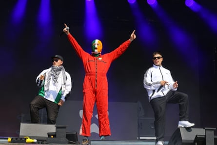

I t is perhaps worth recalling Kneecap’s appearance at last year’s Glastonbury, a lunchtime set in the Woodsies tent that saw the band widely acclaimed as bringers of boozy, edgy hilarity, complete with songs called Get Your Brits Out and Rhino Ket. Twelve months and some provocative onstage comments about Palestine and Conservative MPs later, they’re both folk devil and cause celebre, whose appearance at the festival is the most hotly debated of 2025 – both the prime minister and the leader of the opposition have had strong opinions about it.
It’s a perfect example of how quickly stories can become overheated in the 21st century: vastly more people now have a opinion about Kneecap than have ever heard their music, which is, traditionally, a tricky and destructive position for a band to find themselves in. Invoking a name one probably shouldn’t invoke under the circumstances , you might want to ask the surviving members of the Sex Pistols how that worked out for them.
Still, the West Holts area is so packed, it has to be closed down to prevent a crush. The stage is barely visible for flags, most, but not all of them, Palestinian (there’s still room for WE LIKE TO MOVE IT MOVE IT, SMITHY’S ON A BENDER and indeed I EAT ASS – THAT’S AMORE). Kneecap themselves seem happy to lean into the controversy: their appearance is preceded by a montage of voices condemning the band – Sharon Osbourne figures heavily – and much booing from the audience. Their ongoing travails are regularly referenced – “everyone in that fucking tent agreed with me”, protests Mo Chara (real name Liam Óg Ó hAnnaidh) about the Coachella appearance that intensified the whole business. Bandmate Móglaí Bap (Naoise Ó Cairealláin) suggests that the audience should attend Ó hAnnaidh’s forthcoming court hearing – he’s been charged with what Bap calls a “trumped up” terrorism-related offence for allegedly displaying a Hezbollah flag at a London gig, for which Mo Chara has been unconditionally bailed – and “start a riot outside the courts … the Daily Mail will love that! Fuck the Daily Mail! Fuck Keir Starmer!” The latter is among a longer list of enemies that also includes Rod Stewart, who’s made the impressively ballsy choice to preface his Glastonbury appearance with an expression of support for Nigel Farage.
Triumphant … Kneecap at West Holts.Photograph: David Levene/The Guardian
It’s probably too late to say that it would be a shame if said controversy completely drowned out Kneecap’s actual music, but the point stands. Behind the furore, the trio are really good at what they do. Mo and Móglaí are impressive rappers – raw-throated but dextrous, far funnier than you might expect if the only stuff you heard about Kneecap revolved around recent events. And live, their sound comes into its own, a fizzing stew with a bassy intensity that has a hint of the Prodigy about it: Fine Art’s sudden lurches from dubstep to four-to-the-floor pounding; Get Your Brits Out’s warped take on classic Chicago house.
As the crowd break into circle pits and moshing, with a degree of encouragement from the band, it feels genuinely exciting, a feral moment in a festival that’s thus far tended towards sunkissed good vibes. What happens next – whether Kneecap’s ongoing notoriety turns out to be a brief flashpoint, something more lasting, or indeed ultimately the undoing of them – remains to be seen. For now, for this audience, they are triumphant.